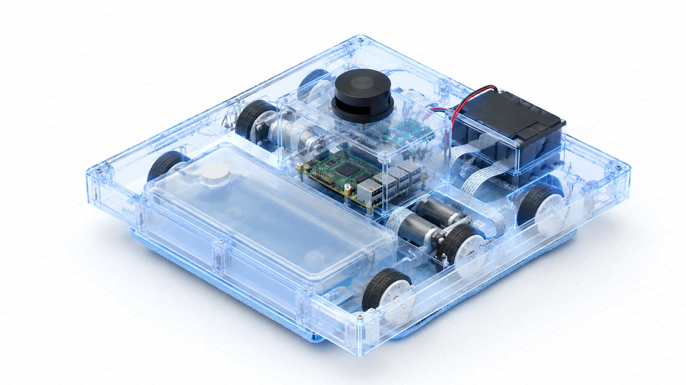

Robot
A Raspberry Pi runs the Python control stack: lidar, IMU and wheel encoders feed particle-filter SLAM and an EKF pose estimate.
Telemetry and pose information, streamed from the robot to your phone. Drive it, clean a room, or let it explore, with always-on emergency stop.
Nothing on your network listens for connections. The robot and the console both open a WebSocket to a small Cloudflare Worker, so there is no port forwarding, no static IP, and nothing to expose on your router.
A Raspberry Pi runs the Python control stack: lidar, IMU and wheel encoders feed particle-filter SLAM and an EKF pose estimate.
A Cloudflare Worker and one Durable Object broker frames between the robot and every app client. The free tier covers it.
A React PWA you install on your phone. It speaks the same protocol the robot already uses on the LAN.
Lose internet and the robot keeps cleaning. The connection is supervised: it reconnects with backoff the moment the relay is reachable again, and the old LAN viewer still works unchanged.
One off-the-shelf base that sees, thinks, moves and cleans. Every part below is in the open build, nothing custom-fabricated.

RPLIDAR S2L lidar
360° · 10 Hz · 9-axis IMU
Raspberry Pi
Python control stack
Differential drive
encoders · 100 Hz loop
Refillable tank
gravity-fed mop pad
Open it on a phone and the layout collapses to a bottom tab bar. Drive with a virtual joystick, switch modes, and keep the emergency stop within reach the entire time.
Add it to a home screen and it runs full-screen, offline shell and all.
Same console on the couch or on the road. The relay does not care where you are.
The emergency stop is oversized and always on screen. One tap halts the robot, one more resumes.
The whole stack is in the open. Deploy the relay once, point a robot at it, and ship the console to any static host.
Create the Worker and its database on Cloudflare, then provision a robot to get its claim code.
npm run deploy
Run the control stack on the Pi with your relay URL and per-robot secret. It tolerates no internet and reconnects on its own.
python robot/src/main.py --relay-url …
Push to enable GitHub Pages, or drop the build on Vercel or any CDN. Then create an account and pair.
git push && open ./app
Create an operator account, pair a robot, and the live map opens in your browser.